点击上方蓝字关注我，加个🌟标不迷路。
各位小伙伴们大家好，我是 cxuan。
最近有一个开源项目非常火，它能够逆向一切，这个 GitHub 项目就是 REA 。
它的全名是逆向一切：你只需要把应用交给 AI 编程助手，让它调查某个功能到底是怎么实现的。
然后，你就等着就行了。
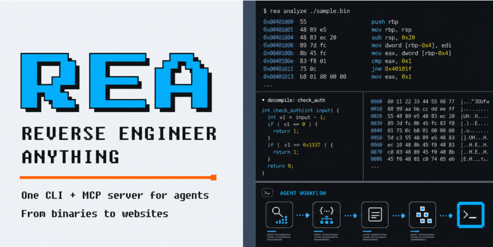
它的火爆程度甚至不亚于当时的 OpenClaw 小龙虾，之前是全民养虾，现在是全民逆向。
截止发文，我看现在已经有 241 K 的 star 了，而我前两天看才有 150 K ，这增速来说，OpenClaw 也自愧不如。
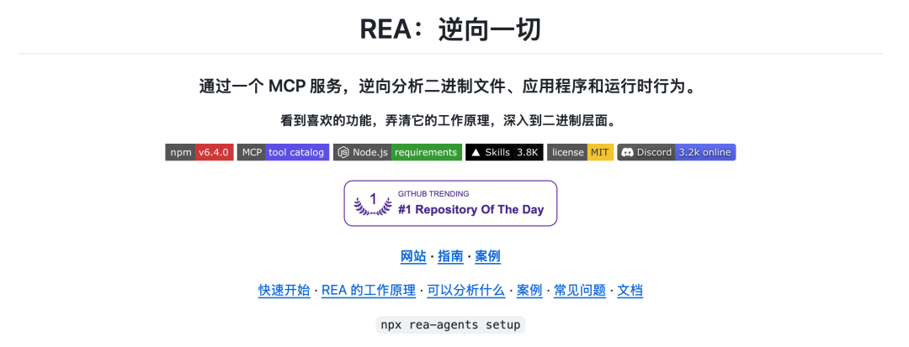
这篇就跟大家聊一聊 REA ，以及 REA 能做什么。
REA 相当于是给你的 Coding Agent 接上了一套逆向分析工具。
你可以用自然语言提出问题，比如：
• 桌面客户端逆向与功能复现：
• 底层原生二进制与算法重构：
• 前端打包产物逆向与接口分析：
之后你的 Coding Agent 会通过 MCP 的方式来调用 REA。 然后 Agent 会依托 REA 开启一套严密的操作：提问、检查、读证据、实现和测试。
它不会让大模型凭空瞎猜或脑补伪代码，而是通过 REA 提供的逆向能力（比如静态 AST 分析、解包 ASAR、提取符号常量、或者调用本地的 Ghidra / Hopper / IDA 反编译二进制指令）。最后输出带有确凿证据的结构化分析报告，并指导大模型完成精准的代码重构或功能复现。
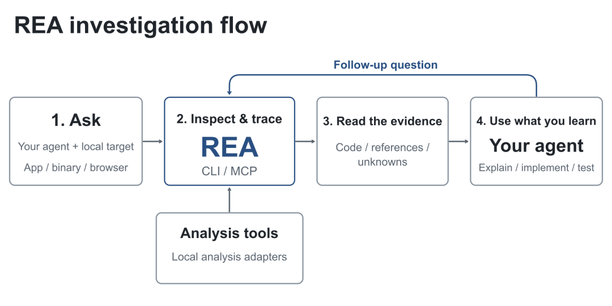
官方提供了几个案例：
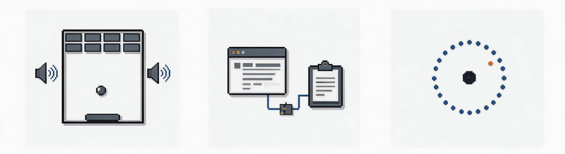
第一个是 Notion 的剪贴板。
官方分析了 Notion Desktop 7.6.1 的应用包，沿着页面 API、预加载脚本和进程通信，找到了主进程调用 Electron 剪贴板接口的位置。案例还解释了复制的 HTML 怎样通过一个 ID 关联本地保存的文档块数据。
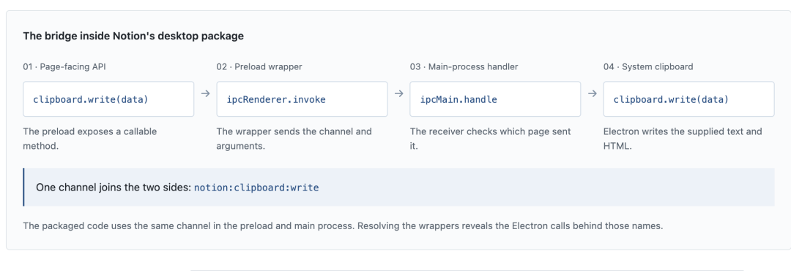
第二个是 DX-Ball 的声音算法。
游戏里，砖块在屏幕上的横向位置，会影响声音偏向左耳还是右耳。最初的反编译结果缺少关键计算，调查继续结合原始指令、调用方和数值常量，重建出对应的 C 函数。
官方记录的验证结果是：3,205 组输入与原始 x86 函数一致，并用指定编译器复现了这个函数的全部 63 个字节。
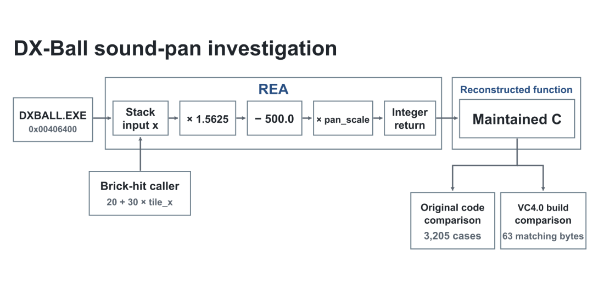
总结来看，这两个案例非常具有代表性，无论是高层架构梳理，还是底层硬核反编译，REA 都改变了传统逆向工程的痛点，把逆向分析变成了一套标准化的证据链推演。
如何使用
下面讲一下如何使用 REA 。
REA 本质是一个基于 MCP（Model Context Protocol）协议的逆向分析套件，支持无缝接入 Claude Code、Cursor、Codex、Gemini CLI 等主流 Coding Agent。
1. 环境准备
• Node.js：建议 22.19+（或更高版本）
• 系统环境：macOS (12+) 或 Linux
• AI 助手：本地已安装支持 MCP 的客户端（如 Claude Code、Cursor、Windsurf 等）
2. 一键安装与配置
官方非常贴心地提供了一键配置命令，直接在终端中运行：
npx rea-agents setup
运行后，交互式向导会自动完成以下步骤：
1. 自动识别 Agent：扫描本地已安装的 Coding Agent；
2. 多选配置：勾选你常用的客户端（比如 Claude Code、Cursor），脚本会自动为你生成并写入对应的 MCP 配置（写入前会自动备份旧配置）；
3. 原生工具可选接入：如果你打算分析原生二进制程序，向导还会提示你连接本机的 Ghidra、Hopper 或 IDA Pro 等反编译工具。
如果你想在终端全局使用 rea 命令行工具，也可以直接全局安装：
npm install -g rea-agents
3. 验证与使用
配置完成后，彻底重启你的 AI Agent（例如完全退出 Claude Desktop 或重启终端中的 Agent），然后运行健康检查：
npx rea-agents doctor
各项检测通过后，你无需手动执行复杂的逆向命令，直接在你的 Coding Agent 聊天框中用自然语言对它下达指令即可。Agent 会自动调用 REA MCP 工具，在本地完成逆向分析并向你返回证据与结论。
或者直接一句 Prompt
直接丝滑安装
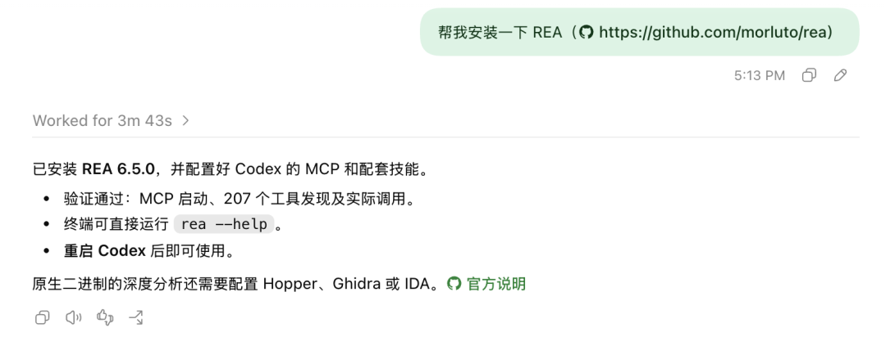
这两天我用 REA 逆向了一些软件用来学习其架构和设计风格。
但是我觉得 REA 虽然能够把知识点都说清楚，但是它出的图风格不太友好。
这里我们可能需要用到一个把架构图画得非常好的开源项目 --- archify。
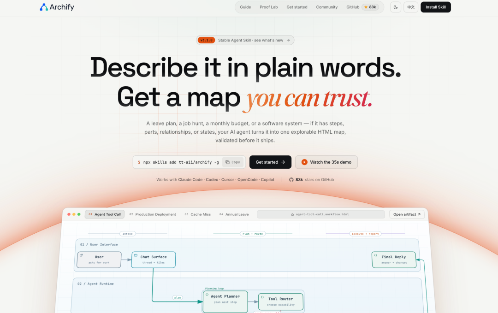
什么是 archify？
archify是一个专门配合 AI Coding Agent 使用的自动化架构可视化工具。
它的设计思路非常巧妙：它让 Agent 根据逆向分析或源码阅读出来的架构逻辑，输出一套带强类型校验的 JSON 规范，再通过本地验证器和内置渲染引擎，生成独立、高颜值且支持交互的 HTML 架构图。
如何安装
你可以通过主流 Agent 的 Skill 机制直接一键添加：
npx skills add tt-a1i/archify --skill archify
或者直接将项目克隆到你 Agent 的 Skills 目录下：
git clone https://github.com/tt-a1i/archify.git
或者直接交给 AI 一键安装也行。
如何使用
安装好之后，它就会以 Skill 的形式常驻在你的 Coding Agent 里。
当你配合 REA 完成某个软件的逆向拆解后，直接对 Agent 提需求：
"请根据刚才 REA 逆向梳理出的系统架构与调用链路，使用 archify 帮我生成一份交互式架构图。" |
Agent 会自动提取模块关系与数据流，生成规范的图表描述，并产出一份独立的 HTML 页面。
给大家看一下我做出来的效果。
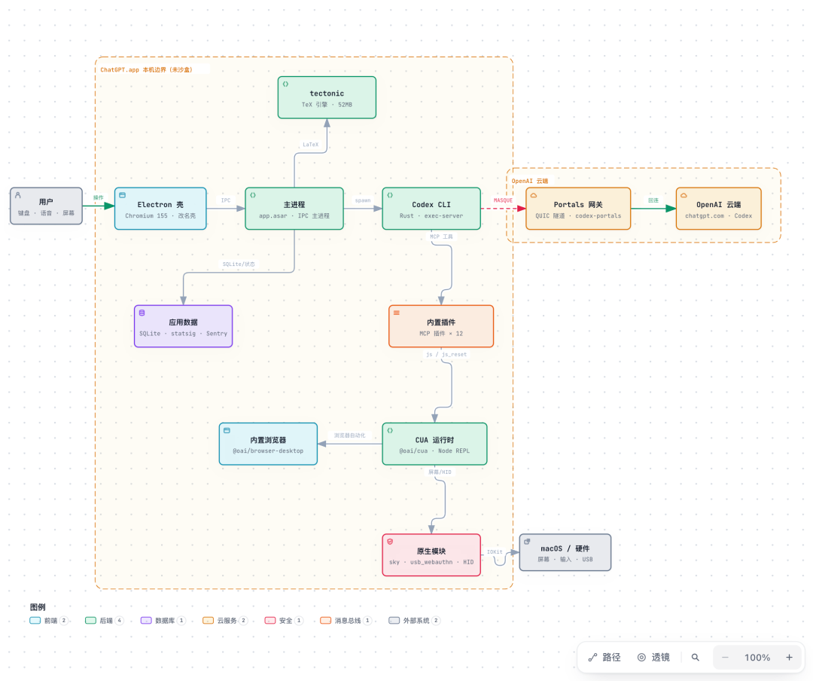
每个获取焦点的节点还可以放大显示，我觉得做的还是不错的。
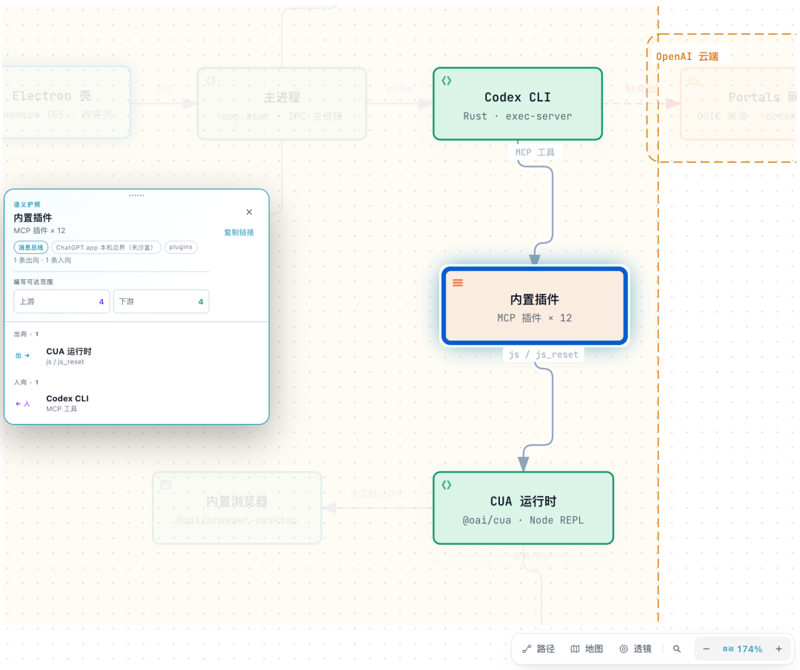
这个 GitHub repo 对比较喜欢做架构图，有审美需求的小伙伴很实用。
除此之外，还可以做时序图等等。
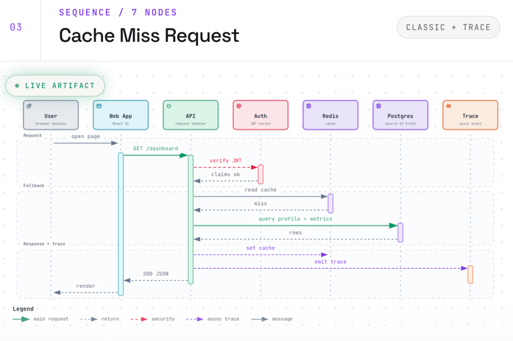
不过缺点是目前几种配色还比较简约，图形支持较少。
总结
总的来说，REA 的出现，可以说是把传统高门槛的逆向工程平民化了。
用 REA + archify ，能够把复杂的 App 设计，变为一份精确的、视觉友好的架构图，然后再进行可实操级别的复现和二创。
跟大家说一个 tips ：最佳实践可以试试 GLM-5.3 + REA ，这里不是 GLM 5.3 -Flash，因为从 Benchmark 的评分来看，GLM 5.3 的逆向能力更强。
但我认为 REA 最佳的使用方式不是逆向一个 App 完事了，而是对 App 做二开和定制化。
就像某个大 V 说的，有了 REA 之后，你的所有 App 都被迫开源了。
注：本文介绍的工具与技术仅供软件工程架构学习、代码审计与安全研究之用，请严格遵守相关软件的最终用户许可协议（EULA）与相关法律法规，请勿用于侵犯知识产权或恶意破解商业软件。
如果这篇文章你觉得还不错，谢谢你的三连，也希望可以转发给同样关注 AI / 科技 / 开发效率的朋友。 我是 cxuan，我们下期再见。